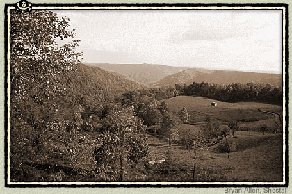

|
As described in Holy Scripture, God created the earth in just six days approximately 6,000 years ago. Some years later, He sent a Great Flood that covered the earth with water, even the highest mountains. Solid materials in the water slowly settled to the bottom. The first deposits to drift down consisted chiefly of chemical precipitates and formed layers of the crystalline rocks, such as granite. Later, other materials settled out and formed the sedimentary rocks, such as limestone.  The Creation and the Great Flood shaped the earth much as it exists today. Since that time, however, erosion has changed the earth's surface by washing away the land. Some scientists today fear that continued erosion will ultimately denude the earth and render it uninhabitable, though many hope that new lands will appear on which life can continue. In a few places, volcanoes have spewed forth lava that hardened into rock. Such eruptions are thought to occur only in places where underground seams of coal are burning, the heat from burning coal being sufficient to melt underground rocks. |